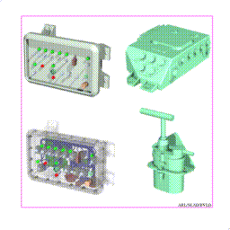
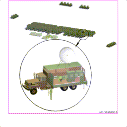

In the following sections, we will discuss the BRL-CAD data file and suggest an approach to managing it. The data file is designed to allow storage of huge volumes of information. In the 1970s, target descriptions consisting of 1,000 objects were considered high detail, yet today there are descriptions consisting of tens of thousands of objects. Individual components have been treated as a system themselves and modeled down to the "wire" level (see Figure 18). Descriptions of dozens of separate targets have been combined in one file to represent whole military units (see Figure 19). All of these feats owe their success to the design and flexibility of the BRL-CAD database. We will look at how the data are stored, the internal file structure, and how data are referenced and organized.
Figure 18. High Detailed Individual Component Modeling.
The BRL-CAD data file is a binary UNIX file of sequential blocks or records of data. The actual organization of the data in any particular record depends on the type of information stored there. There are only two main types of records, the solid record and the combination record. The solid record stores all the parameters necessary to define the various primitives. The combination record is used to store all the other nonsolid objects. Its obvious function is to group any number of objects together. The combination record consists of a header record followed immediately by a series of member records. It is important to note that each member record in a combination contains a transformation matrix. Any editing is stored in these matrices. If the whole combination is edited, then every member matrix is modified to reflect this editing. Any member of a combination may be edited as part of that combination. In this case, only the appropriate member matrix is modified. The important fact to remember is that any editing of combinations is stored in transformation matrices. On the other hand, any editing of solids results in actual changes in the stored parameters.Figure 19. Model of a Corps Command Post.
All objects in the BRL-CAD data file are referenced by a name. This name must be unique and may consist of any characters on the keyboard. One must, however, avoid using any special characters in a name, especially the /, \, *, and !. Upper and lower case letters are considered different characters; thus, Armor and armor are different names. Names such as plate#23(t=2.5) and wire_1w235 are perfectly legal names. As expected, names are usually selected to identify the object as to its function, and the whole process has become quite individualized. We will discuss more about names in a later section.
The BRL-CAD data file is naturally organized in a hierarchical nature (see Figure 20). From the discussion earlier about data records, one can see that every object in the data file is either a member of some combination or by definition, a top-level object. Hence, just by creating combinations, one is creating a hierarchy of objects. The primitives (solid records) are created first since under the CSG scheme they are the building blocks. The primitives are then combined into regions (combinations). The regions are next grouped together, usually to represent a component of the target. Next, several components are combined to represent a subsystem of the target. As these natural, logical groupings are accomplished, the hierarchical structure of the target emerges. This grouping process continues until one combination, the top-level object, represents the complete target. This hierarchy has been constructed from the bottom, where all the solids were defined, to the peak, where the top-level object reigns. This hierarchy is evaluated opposite of the way it was constructed, i.e., from the top, down.

Figure 20. The BRL-CAD Hierarchical Data Structure.
As the modeling of a target progresses and the hierarchical structure takes shape, the user has the freedom to select names on a personal preference basis. However, it is beneficial to other users of the data if some conventions or standard practices are observed in the selection of the names. The following scheme is presently in use at the BVLD for the construction of BRL-CAD models of armored vehicles. This scheme can be used as a guide in selecting similar naming conventions for other classes of targets. The naming conventions for armored vehicles are concerned only with the top few levels of the hierarchy. The modeler is free to be creative at the lower levels.
As previously discussed in detail, BRL-CAD target descriptions are utilized in several V/L applications. It is only logical, therefore, that the top-level name[s] should indicate the intended usage. Upon seeing the top- level object name, any user would then know the intended application and, therefore, how the target was modeled. Note that the "tops" command in MGED (the BRL-CAD geometry editing code) will list all top-level objects in a BRL-CAD file. As we have seen, components are modeled differently depending on the intended application, and this difference is often in the amount of detail. The hierarchical nature of the data file allows one to create several versions of a single component while sharing common geometry. Extending this feature allows several versions of the same target to coexist in the database, sharing common elements. With this in mind, each top-level name has two characters assigned which are used to distinguish lower-level names. In the armored vehicle naming scheme, the following top-level names have been selected (the assigned two characters are in parentheses): nuclear (nu), compartment (ca), component (co), sparc (sp), radar (ra), and infrared (ir). As new applications arise, a similar top-level name and associated two-character designator will be chosen.
At the next level immediately below the top level, which we will call the (-1) level, we have selected three names: turret.nn, hull.nn, and suspension.nn. The "nn" suffixes represent the two characters assigned to the top-level names. At the next level below each of these names, the (- 2) level, we have selected three names for the hull.nn and turret.nn groups. No further names have been selected for the suspension.nn group. For the turret.nn group, the following names have been selected: tur.ext.nn, tur.int.nn, and tur.air.nn. As no surprise, the following names have been selected for the hull.nn group: hull.ext.nn, hull.int.nn, and hull.air.nn. These lower-level naming conventions for armored vehicles are summarized in Table 1.
TABLE 1. Lower-Level Naming Conventions for Armored
Vehicles.
_____________________________
| |
| Names |
|____________________________|
| (-1) Level | (-2) Level |
|______________|_____________|
|turret.nn | tur.ext.nn |
| | tur.int.nn |
|______________|_____________|
|hull.nn | hull.ext.nn |
| | hull.int.nn |
| | hull.air.nn |
|______________|_____________|
|______________|_____________|